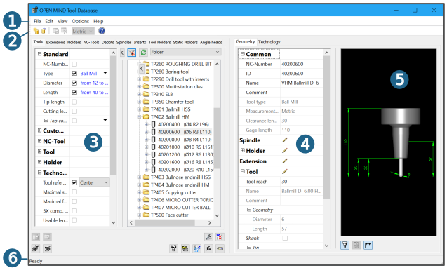
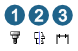
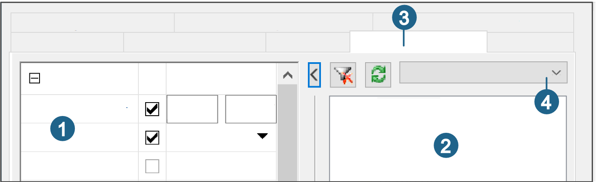
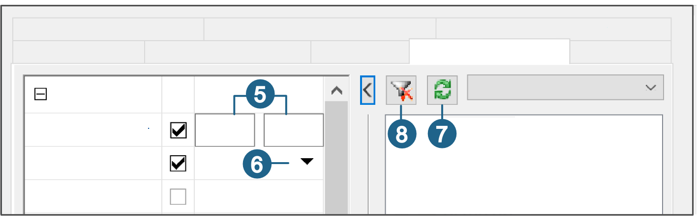

12.4. User interface
The user interface consists of the following elements:
(1) Menu bar, (2) Toolbar, (3) Browser with tabs and filters, (4) Data view of the overview window with tabs, (5) Graphics area, (6) Status bar.
|  |
Menu bar
|
File |
New...: Create a new database. Open...: Open an existing database. Convert...: Convert a local database in |
|
Edit |
Cut, Copy and Paste: Standard Windows functions that are valid for all entries in the database browser. |
|
View |
Show or hide the toolbar, status bar, browser window. |
|
Options |
Accuracy: Configure the measurement system. |
|
Help |
Tool Database Help: Open the online help. Info...: Display the version number and other version details. |
Toolbar
 |
Save or Delete a record. |
|
Switch the measurement system (metric/inch). |
|
|
Open the online help. |
|
|

|
Geometry preview (1) Switch between 2D and 3D representation. (2) Switch between parametric and free tool geometry. (3) Show dimension. |
|
Create a new database or open an existing database. |
Browser
You define filters in the left browser panel (1). The right panel (2) is where the filtered elements of the active tab (3) are displayed and you can create new elements. Use the drop-down combo box (4) to select whether Folders, Tool types or all elements (All option) are to be shown in the browser.
|  |
Define, apply and reset filters
To filter the elements of a tab (tools, extensions, ...) according to characteristics, proceed as follows:
-
On the right side of the filter (5), click the required characteristic and define a value range by entering numerical values and/or
-
Click the drop-down combo box (6) and select the required element.
-
repeat the process at action (1)/(2) until all required characteristics and elements have been defined.
Click the icon (7) or press F5 to apply the defined filter.
Click the icon (8) to reset the defined filter.
|  |
Tip
|
If the Select NC-Tool dialog is opened from the job definition, the defined tool type is regarded as a filter and the appropriate tool properties are already pre-selected. Examples: |

-
Adaptor: Defined in the machine administration ( → → → ) and pre-selected in the filter ( → ).
-
Material: Defined in the job list ( → → ) and pre-selected in the filter ( → ).
All tool types permitted for a machining operation can be changed directly in the filter without having to close the dialog and switch to the job definition.
Data view of the overview window
Detailed information about the entry selected in the browser is displayed in the data view of the overview window and in the graphical preview. If you have selected a folder, the elements of the folder are displayed in a list view within the data view.
Configure the display of parameters in the data view
Right-click the upper area of the data view to configure the display of the parameters. Disable parameters that are not to be shown in the data view.